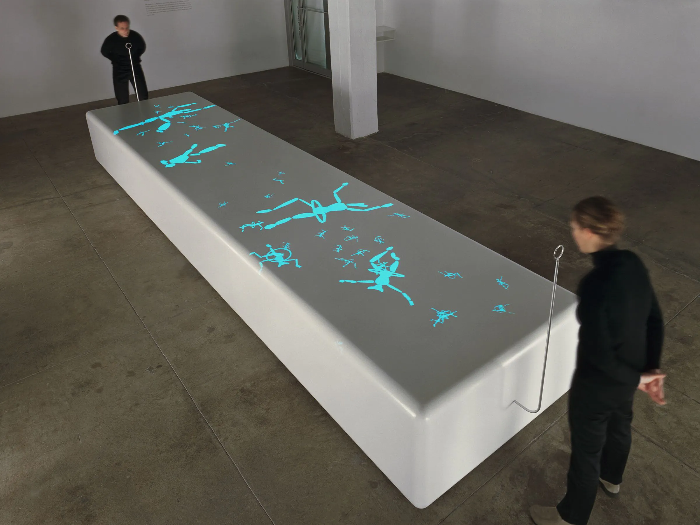
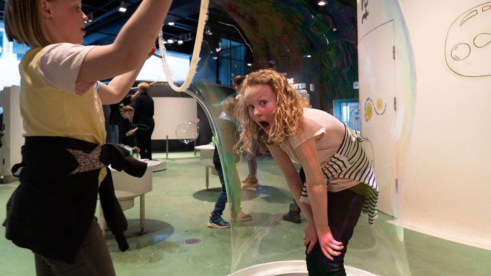

The installation is a reflection on ephemerality. The memory of a nostalgic childhood trinket, a soap bubble maker, serves as the point of interaction for the central piece, hinting at the subtle action of blowing. Visitors become an integral part of the installation, as it is their breathing which unfolds a chain of events.
By blowing at different lengths and intensities, visitors create and inflate male and female creatures, which subsequently seem to float off into space. Each creature has an individual behaviour which causes different reactions when colliding with one another. Eventually all creatures fade away or disappear into a void.
A second piece, "day six", is presented in the smaller gallery space. This object, also activated by the visitor's breath, plays on the creation myth. Visitors are invited to breathe various randomly selected qualities into their own image via a pair of abstracted nostrils in front of a mirror. When blowing, one can watch oneself exhaling and inhaling a swarm of images representing qualities such as youth or beauty.
In this project the ephemeral and intangible aspects of human communication are represented by a soap-bubble. The shapeless, intangible, and insubstantial speech—once the speech is shouted out through the speaker's mouth, it disappears unless someone hears it immediately, or even if it is heard, the message will be forgotten as time goes—is transferred to a semi-tangible yet still fleeting bubble.
The bubble machine that we created provides person-to-person and person-to-space interaction. The machine has a iris mechanism that varies its outlet size reacting to the participant's speech pattern as if it tries to talk something. Once the participant pauses, the machine blows out various sizes of bubble. The floating bubble represents the subtle state of a message from interpersonal communications that lies in the middle of real and digital world. Also, it creates a certain delay until it pops, which is a metaphor of our behavior that we often delay to send out text-messages through chatting apps. We believe that anyone can be an artist. By open sourcing the details of fabrication process and materials, we want to encourage people to build the machine, interact with it at any locations, and use and modify it as a art tool for realizing their own ideas whether it is for art or not.
Pervasive Computing and User Interface Engineering
An important quality of tangible user interfaces is the materiality of the objects used for the interaction.
How to choose appropriate low-tech materials for interaction?
A big potential of tangible user interfaces is that they take advantage of materials and form for interaction
how to use material properties and cultural material knowledge to construct meaningful, intuitive and, appropriate tangible user interfaces
Tangible user interfaces is a further field of research that stresses the importance and potentials of materiality for interactions between humans and computers.
•Material Mind: How can we integrate a collective “material mind” into design knowledge for tangible user interfaces?
•Material Properties: How can we better understand material properties for meaningful and context adequate interaction?
•Material Mapping: How does the used material relate to the linked digital data and what mappings are useful?
Among first exploratory prototypes is the soap bubble user interface [5], a TUI that uses soap bubbles for human-computer interaction and, in this case, employs an extreme and unusual material with specific material properties to define and constrain interaction techniques, among which were gently touching, blowing, or waving hands to move a soap bubble (see figure 2). The material-focused approach led to a concept for ephemeral user interfaces: UIs that can be created when needed, but only last for a short time.
“code bubble” ---> allows you to play with soap bubbles by a click of your mouse.
Clicking on the blowing hoop, you can generate bubbles which grow as long as you press the mouse: you’ll see them spread through the blowing hoop (when you stop pressing the mouse), and float on the screen, carried away by a virtual air stream.
ArrayList balls = new ArrayList();
PImage cososenzanome;
PImage bubble;
PImage bubble1;
PImage bubble2;
PImage bubble3;
PImage bubble4;
PImage bubble5;
PImage bubble6;
PImage bubble7;
float x = mouseX;
float y = mouseY;
float big = 30;
boolean bubbleAnimation = false;
boolean bubbleGrowing = false;
void setup(){
cososenzanome=loadImage ("cosino.png");
bubble=loadImage ("bubble.png");
bubble1=loadImage ("bubble1.png");
bubble2=loadImage ("bubble2.png");
bubble3=loadImage ("bubble3.png");
bubble4=loadImage ("bubble4.png");
bubble5=loadImage ("bubble5.png");
bubble6=loadImage ("bubble6.png");
bubble7=loadImage ("bubble7.png");
size (1000,700);
}
void draw(){
noCursor();
background (255);
imageMode (CORNER);
image(cososenzanome,mouseX-45,mouseY-45);
if (mousePressed){
x = mouseX;
y = mouseY;
if (bubbleGrowing == false){
bubbleGrowing = true;
big = 30;
}
big = big + 1;
}
if (bubbleAnimation || bubbleGrowing) {
float y2 = y;
if (bubbleAnimation) {
x=x+2;
y2 = y + sin(x / 13) * 10;
}
smooth();
strokeWeight (5);
stroke (random(255),random(255),random(255),100);
fill (random(255),60);
imageMode (CENTER);
}
for (int i = 0; i < balls.size(); i++) {
Bolle bolle = (Bolle) balls.get(i);
bolle.move();
bolle.drawShape();
}
}
void mouseReleased () {
bubbleAnimation = true;
bubbleGrowing = false;
}
void mousePressed() {
int bubbleNr = round(random(7));
if (bubbleNr == 0) {
bubble = bubble;
}
if (bubbleNr == 1) {
bubble = bubble1;
}
if (bubbleNr == 2) {
bubble = bubble2;
}
if (bubbleNr == 3) {
bubble = bubble3;
}
if (bubbleNr == 4) {
bubble = bubble4;
}
if (bubbleNr == 5) {
bubble = bubble5;
}
if (bubbleNr == 6) {
bubble = bubble6;
}
if (bubbleNr == 7) {
bubble = bubble7;
}
Bolle bolle = new Bolle(mouseX, mouseY, bubble);
balls.add(bolle);
}
In this paper, a user interaction-based giant soap bubble simulation system is proposed in which the free-form shape, size, and position of giant soap bubbles are determined by the user’s hand motions. Our method improves the controllability of soap bubble simulation by correcting the jerky hand trajectory and hand velocity to a smooth and gradual path. Our air flow transfer algorithm can produce detailed deformation and standing wave for soap film in real time. Our novel soap film bursting algorithm represents the process of the bursting phenomenon of soap-film and giant soap bubbles in a unified framework. The results of our experiment demonstrate that the system allows the user to experience the giant soap bubble blowing and bursting process in a virtual environment.
Durikovic [9] proposed a method to create small spherical soap bubbles from a fixed round tube and simulate elastic deformations based on a mass-spring system. Wei et al. [10] simulated deformation and oscillation of soap bubble using spherical harmonics, and Huszar and Szecsi [11] proposed a fast method that renders dense soap foam and models foam interaction. Zheng et al. [12] presented a regional level set technique to represent complex bubble clusters, and Pan et al. [13] proposed a robust method to model soap films and soap bubbles based on an energy minimization approach. Recently, Da et al. [14] proposed a technique that simulates realistic bubble clusters and deformation of soap films and bubbles using a Lagrangian vortex sheet, and Kim et al. [3] introduced a method to simulate the formation of giant soap bubbles by using the varying surface tension with Gibbs-Marangoni elasticity. These previous studies focused on developing algorithms that handle the physical and geometrical characteristics of soap films and soap bubbles, whereby the motion of the blowing tool was simulated with a manual input or fixed state. To the best of our knowledge, no efficient method is available that allows users to experience the blowing and bursting of 3D soap bubbles by their motions.
Many physics-based modeling techniques have been presented to simulate the air effects of soap bubble and cloth. A study that simulates the interaction of a wind field with a lightweight deformable object including soap bubble has been proposed [10], but it did not consider the air effect inside the soap bubble. The inflatable model [15], in which air is inflated inside the deformable surface, has been proposed, but it focused on the air pressure inside the deformable surface and did not consider air flow. The giant soap bubble creation model [3] has been proposed, but it treated air effect as air pressure based on Young Laplace’s law. Chen et al. [16] proposed an efficient technique that realistically simulates air effects between cloth and a deformable object based on Darcy’s law and the air transfer method. However, these previous studies that deal with air effects of the soap bubble and cloth did not take into account the air flow inside the giant soap bubble.
Nota: este paper tiene un montón de fórmulas matemática para simular las burbujas. Las añado en la sección de cosas ñoñas.
Making soap bubbles has always been one of the most engaging activities at Experimentarium. Our visitors intuitively love the beautiful, volatile bubbles and they experiment for hours. (...) Soap bubbles are amazingly engaging and can help explain phenomena such as refraction of light, minimal shapes and fluid streamlines.
"The secret sauce of virtual reality is presence, the feeling of being in another place. Doing it well means tricking the brain’s normal defenses, and Schell likened it to a “fragile soap bubble” because the things that might “pop” presence are everywhere."
-Eric Johnson, Vox.